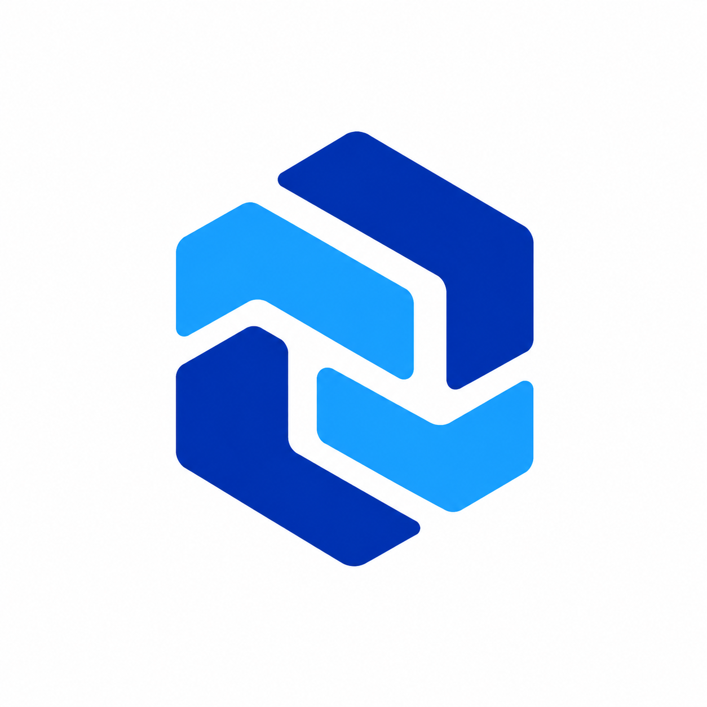
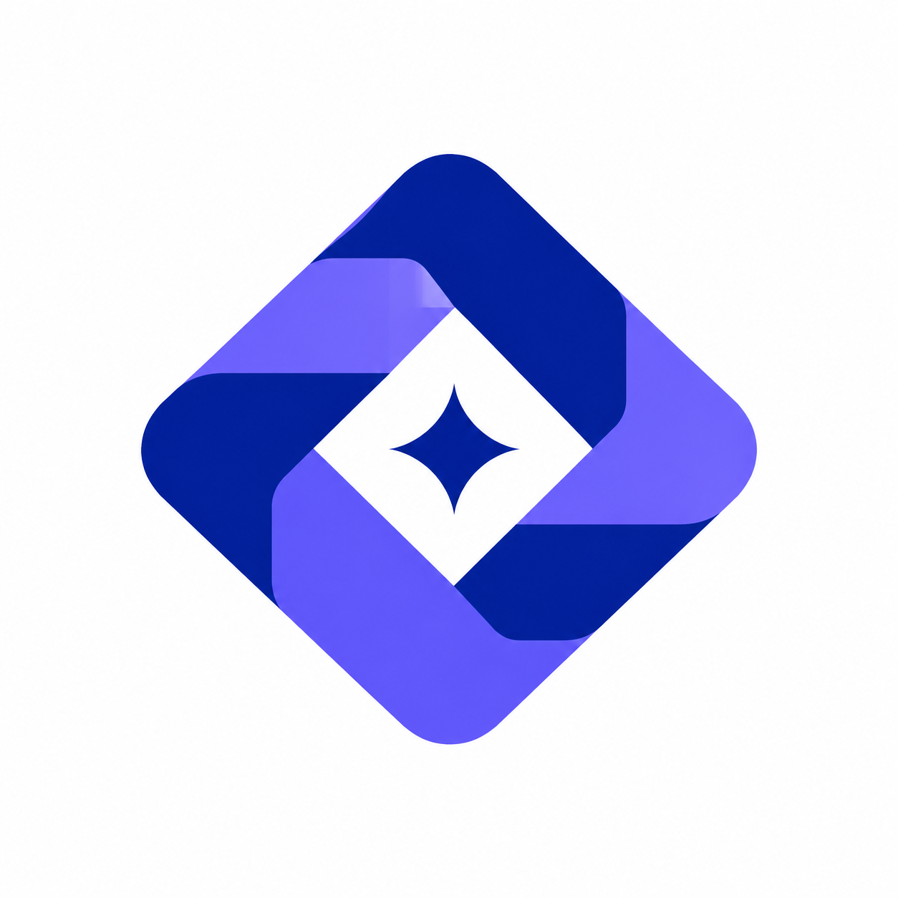
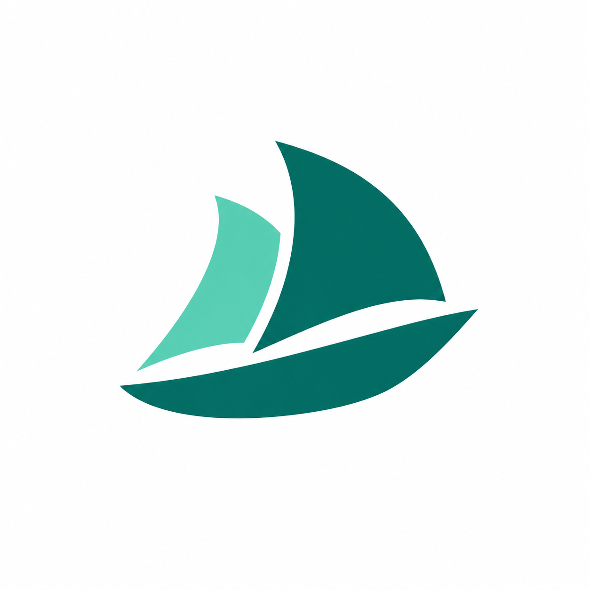
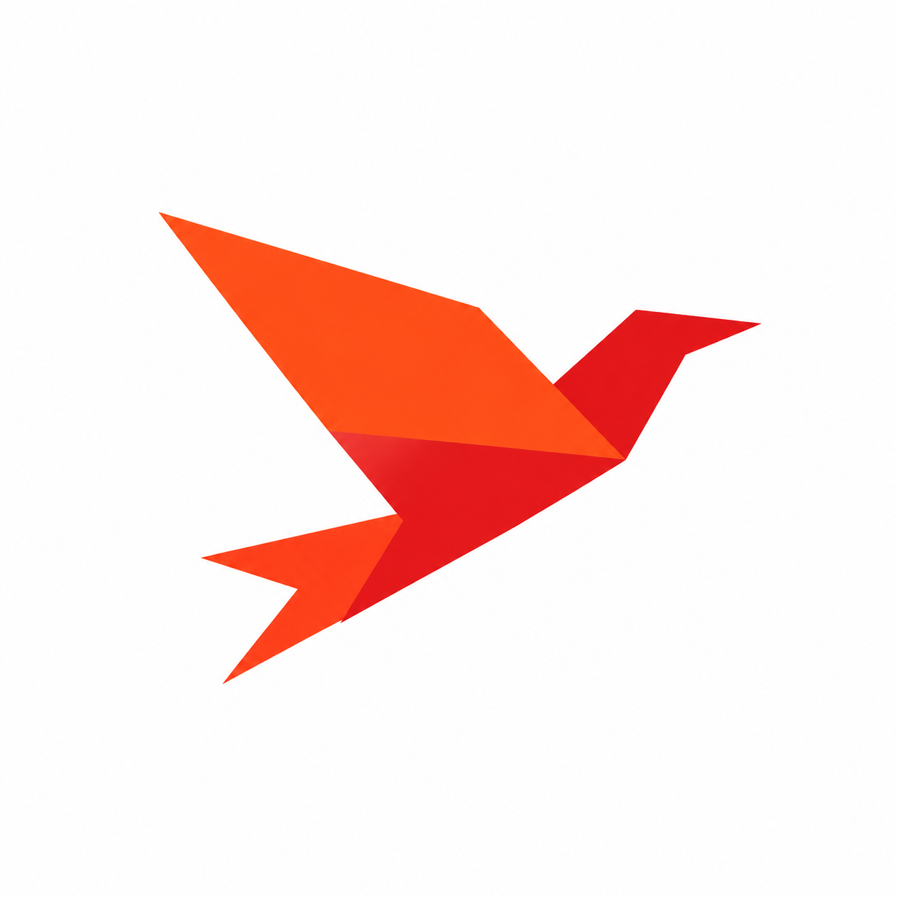

栖造 · NestCraft
中文名：栖造 ｜ 英文名：NestCraft ｜ Logo：03 号「知识之舟」青绿色双帆船。
UI-BRAND-001 · v2 · 品牌已应用到唯一当前主设计稿。Logo 本体仍无字母或文字，中英文名称单独排版；正式软件尚未替换。下方保留首版候选与当时的推荐标签，当前组合为「栖造 / NestCraft＋03」。
名称候选
栖造
让想法有所栖息，让创作成为成果。温暖、有记忆点，适合个人创作工作台。
星织
把多个 AI 能力、知识与任务织成一个空间。科技感与协作感兼具。
启构
从想法启程，将需求构建为成果。偏研发、执行与交付。
合序
分散的工具与任务，合而有序。突出整合与工作秩序。
知舟
知识承载创作，驶向成果。适合知识管理与办公场景。
灵枢
灵活的智能中枢，连接不同能力。适合平台型产品定位。
元匠
用基础能力打磨成果。有创造力与工匠气质。
云序
让智能工具与工作流程井然有序。轻盈、简洁、偏效率。
纯图形 Logo 候选
模块构筑
几何模块彼此连接，代表构建与整合。建议搭配：启构 / 合序。


协作编织
蓝紫织带与中心星形，代表 AI 能力协作。建议搭配：星织 / 灵枢。


知识之舟
已选组合：栖造＋03。青绿色双帆与船身，代表知识承载、持续向前；Logo 保持纯图形。


轻盈折翼
橙红折纸鸟，代表灵感起飞与创造力。建议搭配：栖造 / 元匠。

